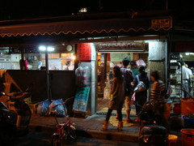

朝食後すぐ電車で東へ向かう。
1時間くらいで乗り換え、まず平渓線というローカル線沿いの観光。
現地人中心に観光客で満員の電車だったが、適当に調べた情報を頼りに無人駅で降りたら
自分一人でいきなり心細くなった。
線路を歩こうと思っていたが、でかでかと禁止と書かれていたので山道をハイキングがてら回り道した。
しかしこれがどうやら失敗。Google map と実際の道のギャップが大きく、寄ろうと思っていた滝に至る道が見つからず
諦めて次の街、十分へ。
| 無人駅。平渓線は行っちゃった | 十分入口。天燈が迎えてくれる |
|
|
この街の雰囲気は独特で、街の中心を線路が走り、電車が来ない間はわいわいと人が立ち入って商店街の一部のようになっている。
寛容さのない最近の日本だったら炎上しそうな光景だと思ってしまった。
十分では願い事を書いて上げる名物の小さな気球、天燈がフワフワと上がっていく。
願い事のジャンルによって色が違うらしく、カラフルが気球が次々と上がり幸せな気分になる光景。
更に電車で奥地へ行き、田舎町を歩く。
他の街でも天燈が上がっていたが、やはり十分が一番有名のようだ。
平渓線を引き返し、バスに乗り換えて仲間との集合場所、九份へ。
山間の小さな町に赤い提灯に飾られた店が並び、面白い街だった。
ひっそりとした味わいを期待していたが、有名な観光地でしかも土曜ということもあり、
商店街は歩けないくらいのひどい混雑ぶりだった。
ここで仲間の一人から、やっぱり九份へ行くのやめようかと思う、と言う目を疑う LINE 着信。
相談の結果来ることになったが、もう色々適当だ。
| 九份到着。山の上だが海まで見渡せる | どこもこんな感じの混雑 |
|
|
有名な千と千尋のモデルになった(自称らしい。公式には発表されていないとか)阿妹茶酒館で待ち合わせ。
絵になる店だが混雑も MAX。
茶店で再会したのち、少し街を散策してからタクシーで台北に戻る。
仲間の友人も合流し、6人で夕食。海老中心の食事でおいしい。二次会は餃子屋。
| 九份の料理屋の裏側 | 二次会の餃子屋。怪しい闇の奥に |
|
 |
見たいところを見て食べて飲んで話して、充実の一日だった。
終電がない。夜の繁華街を歩いて帰る。
|